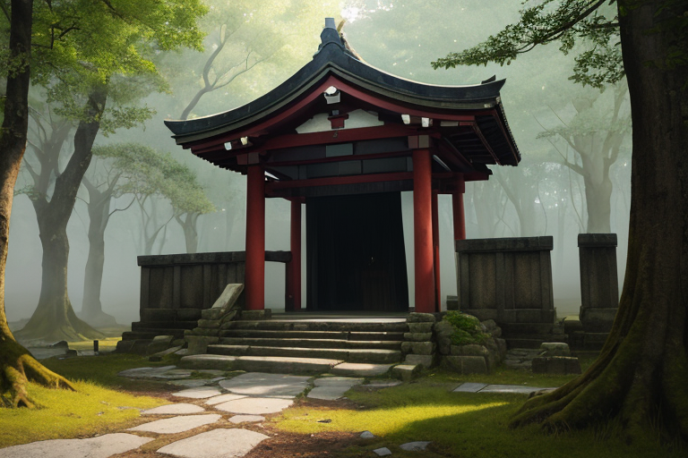
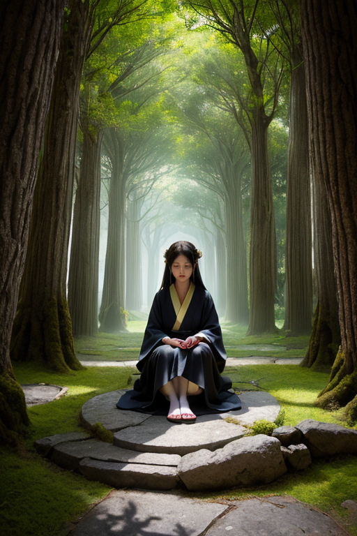
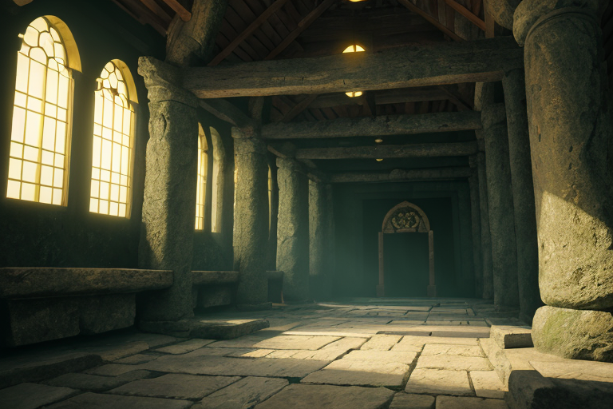
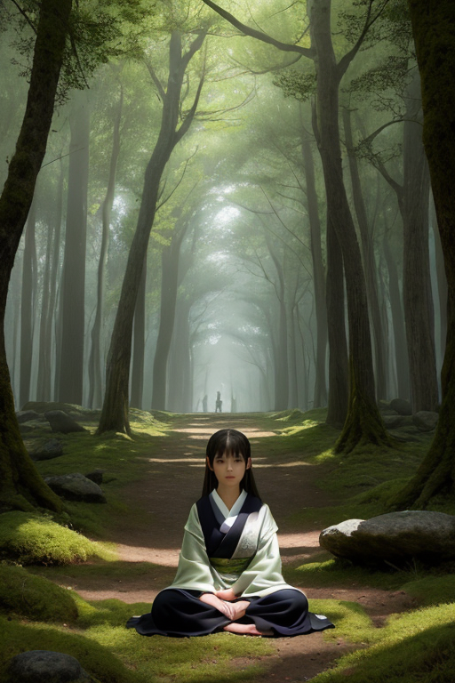
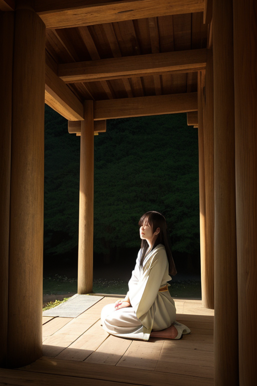

第一章 現実の奈良
あなたはまだ気づいていない。この土地にも、王がいることを。
東大寺の大仏殿は、静かに朝の光を浴びている。観光客のざわめきはまだ遠く、境内には鹿の足音と、風が古木を揺らす音だけが響く。ここは、聖武天皇が鎮めようとしたものの、始まりの場所だ。歪みの列島において、奈良は特に深い古層が堆積する地点である。地図には記されない、見えない亀裂が、平城京の地盤の下、法隆寺の柱の根元、吉野山の桜の土中に、幾重にも走っている。それは封印の線だ。
歪みは絶えず蠢く。微細な地震の波は、この古都の静寂を、目には見えないかすかな振動で満たしている。観光客が手にする鹿せんべいの粉が舞い、柿の葉寿司を包む葉が揺れるその一瞬一瞬に、地中の圧力は増減を繰り返す。誰もが「古都の佇まい」と呼ぶその時間の厚みこそが、実は、何かが封じ込められている証だった。始まりの問いは、この静けさの底に沈殿している。そして、その静寂を、たった一人の存在が、動じることなく見つめ続けていた。

第二章 歪みの兆候
春日大社の暗がりに、苔むした釣燈籠が微かに揺れた。鹿たちが首を上げ、耳をそばだてる。奈良公園の静寂は、観光客のざわめきとは別の次元で、確実に薄れつつあった。地中を流れる「古い波」のリズムが、僅かに乱れ始めている。それは、聖武天皇がこの地に都を定め、大仏に国の安寧を託した時から脈打ってきた、国土を安定させるための基層振動だ。
ナラティア・オリジンは、法隆寺の五重塔の影に立って、その乱れを皮膚で感じ取っていた。王の目には、吉野山の山肌に刻まれた無数の歴史の断層が、かすかな疼きを発しているのが見える。封印線。この列島の「始まり」に近い場所に張り巡らされた、最も古い結界の一部が、千年の時を経て疲弊しつつあった。
「オリジェラ」
「はい」
傍らに現れた古層の妖精は、穏やかな顔に一抹の緊張を浮かべる。王は言葉を続けない。言うまでもない。この歪みは、単なる地殻変動ではない。封じ込められてきた「始原」そのものの胎動の、ほんの前兆なのだ。

第三章 王の葛藤
東大寺の礎石は、深い地中から伝わる微かな鼓動を、確かに受け止めていた。ナラティア・オリジンは、その鼓動の意味を知っていた。これは災害ではない。この列島の「始まり」の記憶が、長い封印の眠りから、ほんの少し目覚めようとする音だ。
「解放すべきでしょうか」
オリジェラの問いかけは、いつになく重かった。古層の妖精は、保存してきた古代波の全てを感じ取っている。解放すれば、歪みは収まるかもしれない。だが、封印の彼方にある「始原」の力が、今のこの国を飲み込むかもしれない。
王は静かに目を閉じた。聖武天皇が大仏に込めた願い、平城京の礎、そしてそれ以前の、森羅万象が渾然一体であった時代の気配。始まりは、破壊と創造の境界にあった。維持することも、解放することも、どちらも「始まり」への背信になりうる。
深緑と金の紋章が、かすかに輝いた。王は決断を下さなかった。今はただ、この胎動に耳を澄まし、古都の静寂の中で、答えそのものが生まれてくるのを待つ。

第四章 妖精との対話
春日大社の深い森影で、鹿せんべいを手にした観光客の笑い声が、かすかに届く。オリジェラは、苔むした磐座に手を触れていた。その穏やかな表情の奥に、途方もない時間の厚みがあった。
「封印は、『始まり』を保つための器です」彼女の声は、森のざわめきと同化していた。「平城京以前、この地には言葉にならない『気配』が満ちていました。聖武天皇が大仏を建立し、都を定めたのは、そのあまりにも豊かな気配を、『形』という器に収め、守るためでもあった。歪みの列島において、奈良の古層は特に濃厚です。放っておけば、あらゆる始まりが同時に噴出し、すべてを無に帰すかもしれない」
王は黙って聞く。ヤマトナが静かに近づき、その角を王の袖にそっと触れた。角には、消えかけた古代の波紋が刻まれている。
「器が古び、ひびが入れば、中身が漏れ出す。今、感じている胎動は、そのひびから零れ出る、『形』以前の始原の一片です。封じるべきか、解くべきか。その答えは、器そのものの中にはありません」
オリジェラは目を上げ、東大寺大仏殿の甍を遠くに見つめた。
「答えは、今ここに生き、笑い、鹿にせんべいをやり、柿の葉寿司を味わう人々の、次の一歩が、新たな『始まり』をどこに定めるかにかかっているのでしょう」

第五章 微調整と余韻
東大寺の柱は、微かに軋んだ。それは地震計にも、誰の耳にも捉えられない、古材だけが知る歪みの音だった。ナラティア・オリジンは大仏殿の陰に立ち、掌をかざした。深緑の光が、柱の根本から、瓦の一枚一枚へと静かに這う。修復ではない。漏れ出た始原の一片を、再び器の中へと沈め、ひびを「今ここ」の時間で満たす微調整だ。吉野山の古層から、春日山の静寂を経て、平城京跡の地脈へ。力は巡り、封じ直される。
代償は訪れた。王の深緑の衣の裾が、ほんの少し、灰をまとったように色褪せた。感情を持たぬはずの彼の静寂が、一瞬、古びた紙のようにはかなげに揺らぐ。オリジェラがそっと肩に触れる。隣には、角に微光を宿したヤマトナが佇む。最古のペアは、無言でこの変化を見守った。
始まりはどこにあるのか。答えはまだない。だが、鹿せんべいを手に笑う子供の声が、柿の葉寿司を包む葉の匂いが、この古都に新たな「今」を刻み続ける限り、器は壊れず、ただ静かに時を蓄えていく。王は目を閉じ、日常のざわめきを、次の調整への指標として聴き始めた。
あなたの町にも、王がいる。